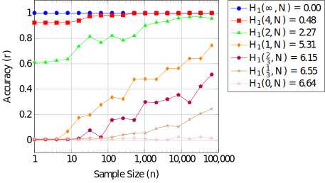

Encrypted Search: A probabilistic estimator of confidentiality.
2023-09-30
Abstract
We derive a confidentiality measure of plaintext queries against an adversary that is (only) able to observe the corresponding hidden queries. We consider an adversary that employs a plaintext attack on the hidden queries to infer a mapping to plaintext. Finally, we apply the estimator to a resilient Encrypted Search system that tries to exceed a minimum level of confidentiality.Keywords: Encrypted Search, known-plaintext attack, oblivious search, Bootstrap method, information retrieval, information security, resilience engineering
1 Introduction
With the advent of cloud computing, it is tempting to store our confidential data on remote (untrusted) systems like a cloud storage provider. However, a system administrator may be able to compromise the confidentiality of our data which threatens to prevent further adoption of cloud computing and electronic information retrieval in general if the threat cannot be mitigated.
The primary challenge is a trade-off problem between confidentiality and usability of the data stored on remote untrusted systems. Encrypted Search attempts to resolve this trade-off problem.
Definition 1.1 Encrypted Search allows authorized search agents to investigate presence of specific search terms in a confidential target data set, such as a database of encrypted documents, while the contents, especially the meaning of the target data set and search terms, are hidden from any unauthorized personnel, including the system administrators of a cloud server.
Essentially, Encrypted Search enables oblivous search. For instance, a user may search a confidential database stored on an untrusted remote system without other parties being able to determine what the user searched for. We denote any untrusted party that has full access to the untrusted remote system (where the confidential data is stored) as an adversary.1
Despite the potential of Encrypted Search, perfect confidentiality is not theoretically possible. There are many ways confidentiality may be compromised. In this paper, we consider an adversary whose primary objective is to comprehend the confidential information needs of the search agents by analyzing their history of Encrypted Search queries.
A simple measure of confidentiality is given by the proportion of queries the adversary is able to comprehend. We consider an adversary that employs a known-plaintext attack. However, since the confidentiality is a function of the history of queries, different histories will result in different levels of confidentiality. We apply the Bootstrap method to estimate the sampling distribution of the confidentiality. The sampling distribution provides the probabilistic framework to resolve security-related questions such as ``what is the probability that the confidentiality is less than \(70\%\)?’’
3 Encrypted Search Model
An information retrieval process begins when a search agent submits a query to an information system, where a query represents an information need. In response, the information system returns a set of relevant objects, such as documents, that satisfy the information need. An Encrypted Search system may support many different kinds of queries, but we assume the query model is a sequence-of-words. The adversary is an untrusted agent that is able to observe the sequence of queries and corresponding search results submitted by authorized search agent. The objective of the Encrypted Search system is to prevent the adversary from being able to comprehend the information needs submitted by authorized search agents. Information needs are represented by queries, which we we assume is a sequence-of-words model. A query submitted to an Encrypted Search system should not be comprehensible to the adversary. A hidden query represents a confidential information need of an authorized search agent that is suppose to be incomprehensible to the adversary. The primary means by which Encrypted Search is enabled is by the use of cryptographic trapdoors as given by the following definition.
Definition 3.1 Search agents map plaintext search keys to some cryptographic hash, denoted trapdoors.
A trapdoor for a plaintext search key is necessary to allow an untrusted Encrypted Search system to look for the key in a corresponding confidential data set.
The Encrypted Search system uses a substitution cipher in which each search key in a plaintext query is mapped to a unique trapdoor signature. The substitution cipher is denoted by \[\begin{equation} h : \mathbb{X} \mapsto \mathbb{Y}, \end{equation}\] where \(\mathbb{X}\) is the set of plaintext search keys and \(\mathbb{Y}\) is the set of trapdoors.
The most straightforward substitution cipher is a simple substitution cipher where each atomic plaintext search key maps to a single trapdoor as given by \[\begin{equation} \label{alg:q_to_hq} \operatorname{hidden-query-generator}(\boldsymbol{x}) = \left\{h(x) : x \in \boldsymbol{x}\right\}, \end{equation}\] where \(\boldsymbol{x}\) is a plaintext query and \(h\) is the substitution cipher (hash function).
Given a plaintext key \(x \in \mathbb{X}\), \(h(x)\) is a random variable whose support is a subset of the trapdoors in \(\mathbb{Y}\). Given any plaintext keys \(x,x' \in \mathbb{X}\), \(x \neq x'\), the supports of \(h(x)\) and \(h(x')\) are disjoint. This makes it possible to undo the substitution cipher by some function denoted by \[ g^* : \mathbb{Y} \mapsto \mathbb{X} \] such that \[ x = g^*\left(h(x)\right) \] for every \(x \in \mathbb{X}\). Thus, given a trapdoor \(y \in \mathbb{Y}\), the corresponding plaintext key is given uniquely by \(g^*(y) \in \mathbb{X}\). If \(h\) is a simple substitution cipher where each plaintext key maps to a single trapdoor, then \(h\) is a function and \(g^*\) is its inverse denoted by \(h^{-1}\).
Definition 3.2 A hidden query time series of size \(p\) is a sequence of \(p\) hidden queries given by \[ (\boldsymbol{y_1}, \ldots, \boldsymbol{y_p}), \] where \(\boldsymbol{y_j}\) is given by \[ \boldsymbol{y_j} = \operatorname{hidden\_query\_generator}(\boldsymbol{x_j}) \] for \(j=1,\ldots,p\) and \(\boldsymbol{x_1},\ldots,\boldsymbol{x_p}\) is a time series of \(n\) plaintext queries submitted by authorized search agents.
We assume the adversary may only observe the hidden query time series to estimate the plaintext query time series. We denote the \(p\) components of the \(j\)-th trapdoor \(\boldsymbol{y_j}\) by \[ y_{j 1},\ldots,y_{j j_p}, \] and thus given a hidden query time series \[\begin{equation} \left(\boldsymbol{y_1}, \boldsymbol{y_2}, \ldots, \boldsymbol{y_p}\right), \end{equation}\] we may represent it by the time series given by \[\begin{align} \begin{split} \left(y_{1\,1}, \ldots, y_{1\,j_1}, q, y_{2\,1}, \ldots, y_{2\,j_2}, q, \ldots, y_{p\,1},\ldots, y_{p\,j_p}, q\right), \end{split} \end{align}\] where \(q\) denotes the end-of-vector token.
We denote a time series of such trapdoors by the following definition.
Definition 3.3 A time series of \(n\) trapdoors is denoted by \[\begin{equation} \boldsymbol{\tau_n} = \left(y_1, \ldots, y_n\right), \end{equation}\] where \[\begin{equation} y_j = h(x_j) \end{equation}\] for \(j=1,\ldots,n\) and \((x_1,\ldots,x_n)\) is the corresponding plaintext time series.
3.1 Probabilistic Model
The two primary sources of information are given by the (unobserved) time series of plaintext which induces the (observable) time series of trapdoors. Other potential sources of information are ignored, such as the time a hidden query is submitted.
Since the time series of plaintext is uncertain, we model it as a sequence of random variables.
Definition 3.4 The \(j\)-th random plaintext search key, denoted by \(X_j\), in a time series of size \(n\) has a conditional probability given by \[\begin{equation} \Pr\{X_j = x_j | X_1 = x_1,\ldots,X_{j-1} = x_{j-1}\} \end{equation}\] for \(j=1,\ldots,n\) and one of the keys is special and denotes end-of-query.
The time series of trapdoors is a function of the plaintext time series.
Definition 3.5 The uncertain \(j\)-th trapdoor is a random variable given by \[\begin{equation} Y_j = h(X_j), \end{equation}\] where the end-of-query key is not remapped by the substitution cipher \(h\).
4 Threat Model: Known-Plaintext Attack
In this threat model, the adversary is interested in estimating the plaintext time series. However, the adversary is only able to observe the trapdoor time series. Thus, the adversary’s objective is to infer the plaintext from the trapdoors using frequency analysis attacks, in particular a known-plaintext attack.
In a known-plaintext attack, the adversary the objective of the adversary is to learn how to undo the substitution cipher \(h\) as given by \(g^*\). We assume the mapping function \(g^*\) is not known to the adversary, but is able to observe a time series of \(n\) trapdoors, i.e., a particular \(\tau_n\).
A maximum likelihood estimator of \(g^*\) is given by \[\begin{equation} \label{eq:mle} \hat{g} = \arg\max_{g \in G} \bigl\{ \Pr\{X_1 = g(y_1)\} \times \prod_{i=2}^{n} \Pr\{X_i = g(y_i) | X_{i-1} = g(y_{i-1}), \ldots, X_1 = g(y_1) \} \bigr\}, \end{equation}\] where \(G\) is the set of all possible mapping functions from the set of trapdoors \(\mathbb{Y}\) to the set of plaintext keys \(\mathbb{X}\).
If two plaintext keys \(x,x' \in \mathbb{X}, x \neq x'\), may be exchanged without changing the probability distribution of the time series, they are indistinguishable and the mapping function \(g^*\) necessarily has multiple maximum likelihood estimates (even after observing an infinite time series). However, if some of the random variables are not exchangeable, then the adversary may learn something about the plaintext by observing the time series of trapdoors.
The greater the uniformity of the true distribution, the less accurate the maximum likelihood estimator of \(g^*\) is. At the limit of maximum uniformity, where every pair is exchangeable, the adversary can learn nothing about the plaintext by observing the time series. Natural languages have a high degree of non-uniformity and so the primary concern of the adversary is the divergence between the true distribution and the known-plaintext distribution.
We assume the optimal adversary knows the true plaintext distribution \(X_1,\ldots,X_n\) (or a known-plaintext distribution that has a sufficiently small divergence from the true distribution). The known-plaintext distribution may be used to solve an approximation to as given by the following definition.
Definition 4.1 In a known-plaintext attack, the adversary substitutes the unknown true distribution with the known-plaintext distribution and solves under this substituted distribution.
Sub-Optimal Adversaries
A suboptimal adversary may have any of the following problems:According to Piantadosi, the marginal distribution of words in most documents (and queries) follow a Zipf distribution, where the most frequent word occurs approximately proportional to \(k\) times as often as the \(k\)-th most frequently occurring word.
If an adversary ignores correlations in the time series by modeling each time step as an independent and identically distributed random variable, then simplifies to the trivially solvable \[\begin{align} \label{eq:approx_mle} \operatorname{\hat{g}} &= \arg\max_{g \in G} \left\{ \prod_{i=1}^{n} \Pr\!\left[ X = g(y_i)\right] \right\}\\ &= \arg\max_{g \in G} \left\{ \sum_{i=1}^{n} \log \Pr\!\left[ X = g(y_i)\right] \right\} \end{align}\] where \[ \Pr[X = x] = \frac{1}{n} \sum_{i=1}^{n} \Pr[X_i = x]. \]. If the true distribution is an independent and identically distributed time series, the adversary is optimal if a solution to can be found.
5 Confidentiality Statistic
We are interested in measuring the degree of confidentiality as given by the following definition.
Definition 5.1 Given a time series of \(n\) trapdoors \[\begin{equation} \boldsymbol{\tau_n} = (y_1,y_2\ldots,y_t, \ldots, y_n), \end{equation}\] the confidentiality at time step \(t\), \(1 \leq t \leq n\), is given by \[\begin{equation} \label{eq:conf_metric} k_t = 1 - p_t \end{equation}\] where \(p_t\) is the fraction of trapdoors in the first \(t\) time steps that the adversary successfully maps to plaintext. That is, \[\begin{equation} \label{eq:accuracy} p_t = \frac{\delta}{t}, \end{equation}\] where \[\begin{equation} \delta = \sum_{i=1}^{t} \left[g^*(y_i) = \hat{g}(y_i)\right]. \end{equation}\]
The confidentiality statistic is expected to converge to some asymptotic limit, i.e., as \(t \to \infty\), the confidentiality \(k_t \to c\), \(0 \leq c \leq 1\). If the adversary employs a known-plaintext attack where the distribution of the known-plaintext is equivalent to the true distribution, then \(c = 0\), i.e., the adversary eventually comprehends the entire time series.
5.1 Sampling Distribution of Confidentiality Statistic
The confidentiality statistic is a function of a random time series \((Y_1,\ldots,Y_n)\) and therefore has a sampling distribution, denoted by \(K_t\) for \(t = 1,\ldots,n\). The sampling distribution quantifies everything there is to know about the statistic. For instance, the sampling distribution* may be used to make claims like “there is a \(1\%\) chance the adversary comprehends \(70\%\) of the time series at time step \(t\).” Generally, the sampling distribution is not known and thus must be estimated. If we estimate the generative model of the time series of trapdoors, we may use the Bootstrap method to estimate the sampling distributions.
TALK ABOUT THE WAYS TO GENERATE A TIME SERIES OF TRAPDOORS HERE. ONE WAY IS TO SIMPLY DO A MARGINAL. BUT, A BIGRAM ALSO WORKS. TIMING WISE, A BIGRAM THAT IS TIME DEPENDENT… E.G., THE LAST q TRAPDOORS. MANY OTHER MODELS. LOOK IT UP! YOU ACTUALLY ALSO HAVE CODE FOR THIS ALREADY. STUFF DESIGNED TO MAKE IT WORK FOR SMALLER SAMPLES, E.G., INTERPOLATION.
In the Bootstrap method, we resample from the time series and compute the confidentiality \(k_t\) of the resample. If we do this \(m\) times, we generate a sample of \(m\) confidentiality statistics \[ k_t^{(1)},\ldots,k_t^{(m)} \] for \(t=1,\ldots,n\). Given this sample, we may compute any statistic that is a function of the sample. For instance, the expected value of the confidentiality statistic at time step \(t\), \(E[K_t]\), may be estimated by the sample mean \[ \bar{k}_t = \frac{1}{t} \sum_{i=1}^{m} k_t^{(i)}. \] Another estimator of the expected confidentiality is given by a moving average like Exponential smoothing. However, the Bootstrap sampling distribution makes it possible to compute many other statistics of interest.
The variance of the confidentiality statistic at time step \(t\), \(\operatorname{Var}[K_t]\), is another parameter of potential interest and may be estimated by the sample variance \[ s_{m-1}^2 = \frac{1}{m-1} \sum_{i=1}^{m} (k_t^{(i)} - \bar{k}_t)^2. \] If the variance is high at a time step \(t\), the expected confidentiality at time step \(t\) is not very indicative of the confidentiality of any particular time series at time step \(t\). By the large sample approximation, the sampling distribution of \(k_t\) for \(t=1,\ldots,n\) is approximately normal as given by the following theorem.
Theorem 5.1 The sampling distribution of \(k_t\) converges in distribution to the normal distribution with a mean \(\bar{k}_t\) and a variance \(s_{m-1}^2\).
Proof. The confidentiality statistic given by is a linear function of an average. Therefore, by the Central Limit Theorem, the sampling distribution of \(k_t\) converges in distribution to a normal distribution with a mean given by the sample mean and a variance given by the sample variance.
6 Mapping Entropy to Confidentiality
The adversary described in Section 4 may efficiently compromise the confidentiality of a time series of trapdoors if a simple substitution cipher is employed as described in Section @ref(es_model). However, the described adversary is not particularly sophisticated. For instance, a more sophisticated adversary incorporates the search patterns of specific search agents into the probability model described in Section @ref(pr_model).
The adversaries we worry about the most are probably more clever than us. Thus, it may be asking too much to simulate them so that a reliable confidentiality statistic can be produced. Matters are further complicated if a simple substitution cipher is not used, e.g., a homophonic encryption scheme is used to flatten the distribution of trapdoors. In this case, the confidentiality is expected to improve, but it may be difficult to quantify to what extent.
We may be able to construct a lower-bound on confidentiality that is a function of the entropy. The entropy of a random time series of \(t\) trapdoors is given by \(H(Y_1,\ldots,Y_t)\) bits. If the random time series is independently distributed, the entropy simplifies to \(H(Y_1) + \cdots + H(Y_t)\) and if it is also identically distributed is simplifies to \(t H(Y_1)\). Consider the following two cases:
- An optimal adversary is expected to learn nothing about the mapping from trapdoors to plaintext keys by observing a uniformly distributed time series. A uniformly distributed time series of over a support set of \(m\) unique trapdoor signatures has \(\log_2 m\) bits per trapdoor of entropy.
- An optimal adversary is expected to learn everything about the mapping from trapdoors to plaintext keys by observing a degenerate time series, which has zero entropy.
Thus, the entropy is bounded by \(0 \leq H\!\left(Y_1,\ldots,Y_t\right) \leq t \log_2 m\)
We use these insights to construct an information again measure given by the following definition. ::: {.definition} The mean information gain of a random time series \(Y_1,\ldots,Y_t\) is defined to be the difference between the maximum entropy and the actual entropy as given by \(\mu(t) = t \log_2 m - H(Y_1,\ldots,Y_t)\), which is a real number between \(0\) and \(t \log_2 m\). :::
If the random time series is independently and identically distributed, then the mean information gain is given by \[ \mu(t) = t \bigl(\log_2 m - H(Y_1)\bigr) \] bits.
The rate of change of the mean information gain is given by the following theorem. ::: {.theorem} The rate of change of the mean information gain at time \(t\) is given by \[\begin{align} \lambda(t) = \log_2 m - H(Y_t | Y_{t-1},\ldots,Y_1) \end{align}\] bits per trapdoor, which is a real number between \(0\) and \(\log_2 m\). :::
Proof. The rate of change at time \(t\) is the difference between the mean information gain at time steps \(t\) and \(t-1\), which is given by \[ \lambda(t) = \mu(t) - \mu(t-1) = \log_2 m - H(Y_t, \ldots,Y_1) + H(Y_{t-1},\ldots,Y_1). \] The joint entropy \(H(Y_1,\ldots,Y_t)\) may be rewritten as \[ H(Y_t | Y_{t-1}, \cdots, Y_1) + H(Y_{t-1}, \cdots, Y_1). \] Performing this substitution results in the equivalent equality given by \[\begin{align} \begin{split} \lambda(t) &= \log_2 m - H\left(Y_t | Y_{t-1}, \ldots,Y_1\right)\\ &\qquad+ H\left(Y_{t-1}, \ldots,Y_1\right) -H\left(Y_{t-1},\ldots,Y_1\right) \end{split}\\ &= \log_2 m - H\left(Y_t | Y_{t-1}, \ldots,Y_1\right). \end{align}\]
If the random time series is independently and identically distributed, then the rate of change is a constant given by \[ \lambda = \log_2 m - H(Y_1) \] bits per trapdoor. We may rewrite \(\mu(t)\) in terms of the rate of the mean information gain as given by \[ \mu(t) = \sum_{j=1}^{t} \lambda(j). \] For the uniformly distributed time series and the degenerate time series, \(\lambda(t) = 0\) and \(\lambda(t) = \log_2 m\) respectively for all time steps \(t\).
We make the following conjecture about the mean information gain.
Conjecture 6.1 The mean information gain \(\mu(t)\) quantifies the amount of information the optimal adversary is able to extract from observing \(Y_1, \ldots, Y_t\) for the purpose of mapping trapdoors to plaintext keys. An upper-bound on the expected accuracy of the optimal adversary at time \(t\) is an unknown function \[ r : \{1,2,\ldots\} \mapsto (0,1] \] that is a function of \(\mu(t)\) and has the following constraints:
- \(0 < r(t) \leq 1\) for \(t \geq 1\). The accuracy is between \(0\) and \(1\). However, \(r(t)\) is an expectation, and the optimal adversary has a chance at correctly mapping trapdoors to plaintext even if the random time series has the maximum entropy, thus it is always greater than \(0\).
- \(r(t+1) \geq r(t)\). It is a monotonically increasing function since seeing more of the time series is not expected to decrease the optimal adversary’s accuracy.
- If \(\lambda(t) = 0\), then \(r(t+1) - r(t) = 0\). If no information is gained from observing a time step \(t\), then the optimal adversary is not expected to improve accuracy at time \(t\).
- \(\lim_{t \to \infty} r(t) = c, 0 < c \leq 1\). This is entailed by the other constraints. If the adversary knows the true distribution, where the distribution is not uniformly distributed, and the maximum likelihood equation has a unique solution, then \(c = 1\).
Plausible candidates of \(r\) take on sigmoid-like curves. Initially, \(r\) is near its lower-limit (typically near \(0\)) and as \(t\) increases, \(r\) begins to slowly increase. Given an appropriate mapping from trapdoors to plaintext, the empirical distribution of the mapped trapdoors starts to resemble the unknown true distribution. At some point, the empirical distribution has nearly zero divergence from the true distribution, and thus
6.1 Estimating Entropy
Since the probabilistic model for the random time series may not be known, we may estimate the entropy. The entropy of a random time series is equivalent to the expected bit length output by an optimal lossless compressor given the time series as input. \[ H(Y_1,\ldots,Y_t) = E\biggl\{\ell\bigl(\operatorname{compress}^*(Y_1 Y_2 \cdots Y_t)\bigr)\biggr\}, \] where \(\operatorname{compress}^*\) is a lossless optimal compressor of the sequence and \(\ell(x)\) is the bit length of \(x\). Thus, given a time series of \(t\) trapdoors, \(\tau_t = (y_1,\ldots,y_t)\), an estimator of the entropy is given by \[ \hat{H} = \ell\left(\operatorname{compress}(y_1 y_2 \cdots y_t)\right), \] where \(\operatorname{compress}\) is a near-optimal compressor of the time series.
The entropy is an expectation, and is therefore a constant. However, an optimal compressor as a function of \(Y_1,\ldots,Y_2\) outputs a bit string with a random bit length whose expectation is given by the entropy. Thus, it has a sampling distribution.
For the purpose of matching the trapdoors to plaintext, assuming we have the true distribution, the most accurate mapping occurs when the empirical distribution of \(\tau_t\) has zero divergence from the true distribution. The empirical distribution converges in distribution to the true distribution, so as \(t \to \infty\), \(p_t \to 1\).
The adversary is optimal if the time series \(\tau_t\) is drawn from a unigram language model using a simple substitution cipher.
One possibility is to do a curve fit of \(r\) to the mean confidentiality with respect to time step \(t\). Alternatively, … the expected gain from this distribution to the computed confidentiality, and then assume that this mapping generally holds. NOTE CORRECT. REMEMBER, r(t) maps t to accuracy THROUGH u(t). We can calculate u(t), see what the conf. is at u(t), and then map that confidentiality to r(t).
7 Application: Resilience Engineering
From a resilience engineering perspective, we are interested in the probability that the adversary has compromised the sample of \(t\) trapdoors as given by \[\begin{equation} \label{eq:prob_conf} \Pr[K_t \geq \alpha], \end{equation}\] where \(\alpha\) is the minimum acceptable level of confidentiality. If the probability that this minimum level is relatively low (e.g., less than \(95\%\)), the trapdoor signatures could be reassigned to reestablish confidentiality.
As \(t \to \infty\), goes to \(0\). The minimum sample size the adversary may observe without exceeding some specified level of risk is given by the following definition.
Definition 7.1
The maximum number of trapdoors the adversary may observe with an acceptable level of risk of successfully compromising the confidentiality of the system is given by \[\begin{equation} \label{eq:resample_point} t^* = \arg\min_{t} \Pr\{K_t > \alpha\} > \beta, \end{equation}\] whereGiven a set of Bootstrap resample of \(m\) confidentiality statistics \[ \mathbb{K} = \left\{k_t^{(1)},\ldots,k_t^{(m)}\right\}, \] we may estimate in two ways. The most straightforward way is the proportion of the sample that is greater than \(\alpha\) as given by the statistic \[ \Pr[K_t \geq \alpha] \approx \frac{|\mathbb{A}|}{m}, \] where \[ \mathbb{A} = \left\{k \in \mathbb{K} : k > \alpha\right\}. \] However, by Theorem 5.1, \(K_t\) converges in distribution to a normal distribution. Thus, by the large sample approximation, \[\begin{equation} \label{eq:approx_prob_conf} \Pr[K_t \geq \alpha] \approx 1 - \phi\!\left(\frac{\alpha - \bar{k}_t}{s_{t-1}}\right), \end{equation}\] where \(\phi\) is the cumulative distribution function of the standard normal, \(\bar{k}_t\) is the sample mean, and \(s_{t-1}\) is the sample standard deviation. Substituting into and simplifying results in a statistic of \(t^*\) given by \[ \widehat{t^*} = \arg\min_{t} \phi\!\left(\frac{\alpha - \bar{k}_t}{s_{t-1}}\right) < 1 - \beta. \]
8 Case Study: Zipf Distribution
Consider a random time series \(X_1,\ldots,X_n\). If \(X_i\) for \(i=1,\ldots,n\) follow a Zipf distribution, then its rank is a random variable given by \[\begin{equation} \label{eq:rvK} K_i = - \operatorname{Rank}(X_i) \end{equation}\] such that \[\begin{equation} K_i \sim \operatorname{Zipf}(s,N), \end{equation}\] where \(N\) is the number of unique plaintext words and \(s\) characterizes the degree of uniformity of the Zipf distribution.
Definition 8.1 The probability mass function of \(K\) is given by \[\begin{equation} \Pr\{K_i = k | s, N) = k^{-s} H_{N,s}^{-1}. \end{equation}\] where \(H_{N,s}\) is the generalized harmonic number given by \[\begin{equation} H_{n,s} = \sum_{k=1}^{n} k^{-s}. \end{equation}\]
By , the probability mass function of \(X_i\) is given by \[ \Pr\{X_1 = x\} = \Pr\bigl\{K_i = \operatorname{Rank}(x) | s, N\bigr\}. \] for \(i=1,\ldots,n\). Similiarly, since a simple substitution cipher is being used, the probability mass of \(Y_j\) is given by \[ \Pr\{Y_1 = y\} = \Pr\bigl\{X_1 = \operatorname{h^{-1}}(y)\bigr\} \] for \(j=1,\ldots,n\).
The entropy of the Zipf distribution is given by the following theorem.
Theorem 8.1 The entropy of the Zipf distribution with parameters \(s\) and \(N\) is given by \[ H_1(N,s) = H_{N,s}^{-1} \sum_{k=1}^{N} k^{-s} \left(s \log_2 k + \log_2 H_{N,s}\right). \]
Proof. \[\begin{align} H_1(N,s) &= -\sum_{k=1}^{N} \Pr\{K_i = k | s, N\} \log_2 \Pr\{K_i = k | s, N\}\\ &= -\sum_{k=1}^{N} k^{-s} H_{N,s}^{-1} \log_2 \left(k^{-s} H_{N,s}^{-1}\right)\\ &= H_{N,s}^{-1} \sum_{k=1}^{N} k^{-s} \left(s \log_2 k + \log_2 H_{N,s}\right). \end{align}\]
Two limiting cases are given by the following corollaries.
Corollary 8.1 The maximum entropy results when the Zipf distribution has a parameter value \(s=0\) and is given by \(H_1(s = 0,N) = \log_2 N\).
Proof. \[\begin{align} H_1(0,N) &= H_{N,0}^{-1} \sum_{k=1}^{N} k^{0} \left(0 \log_2 k + \log_2 H_{N,0}\right)\\ &= N^{-1} \sum_{k=1}^{N} \log_2 N\\ &= \log_2 N. \end{align}\]
Corollary 8.2 The minimum entropy results when the Zipf distribution has a parameter value \(s \to \infty\) and is given by \[ \lim_{s \to \infty} H_1(s,N) = 0. \]
Proof. First, we take the limit \[ \lim_{s \to \infty} H_1(s,N) = H_{N,\infty} \sum_{k=1}^{N} k^{-\infty} = 0 \] by the convention \(\lim_{a \to 0} a \log_2 a = 0\) and thus \(\lim_{s \to \infty} H_1(s,N) = 0\).
We map the accuracy of the adversary with respect to sample size for various entropy levels. The greater the entropy, the less accurate the mapping is expected to be. At one extreme, we have an entropy of \(0\) (minimum entropy) in which \(100\%\) of the traffic is successfully mapped after viewing a sample of size \(1\) and at the other extreme we have an entropy of \(6.64\) (maximum entropy) where the accuracy is given by pure random chance and is not correlated with sample size.

9 Conclusions and Future Work
The primary contributions in this paper are two-folds. First, there has not been much work for studying how safe encrypted searches are against frequency attacks, which can be measured by a large number of attackers for long period of time, possibly infinitely long. We provide studies on the resilience of encrypted searches against frequency attacks from the view point of resilience engineering approach to enhance security on encrypted searches. Resilience engineering is a new way of enhancing safety by precisely estimating the level of possible threats to a system and feeding them back to adjusting or re-designing the system to maintain the acceptable level of safety.
Our second contribution is development of a new method, Moving Average Bootstrap (MAB) method, which efficiently and accurately calculates the estimator for the minimum number of encrypted words (\(N^*\)) an adversary needs to achieve a given accuracy level (\(p^*\)) with a certain level of confidence as soon as a relatively small number of samples (\(n\)) (i.e., encrypted words) are submitted by legitimate users. Thus, the MAB method will let the defenders calculate the estimator at an early stage without waiting for a large number of queries submitted by legitimate users. Especially from the view point of ``tractability’’, calculating the estimator using, not to mention an infinitely large number of encrypted words, a large number of encrypted words takes time (waiting for a large number of encrypted words to be submitted) and huge storage (storage space to hold the submitted encrypted words) is required.
Our proposed MAB method calculated the estimated number of encrypted search queries an adversary needs to observe (\(N^*\)) for achieving a given accuracy level, \(p^* = 0.30\), at the confidence level of \(95\%\) using only \(5\%\) of the actual observations (250/5000) (Figure 5 (c)). Assuming that the increase in the time an adversary needs to achieve a certain \(p^*\) is proportional to the ratio in the increase of the number of the encrypted words observed by an adversary (\(n\)) for a large number of encrypted words, the MAB method would allow a defender to estimate \(N^*\) in \(5\%\) of time (without waiting for legitimate users to issue a large number of encrypted words). We are currently performing analyses using higher \(p^*\) (\(0.55\) through \(0.80\)) for different levels of confidence (\(90\) to \(98\%\)) for observing how they affect the performance of MAB method and for observing if there is any pathological case for MAB method.
A system administrator being a typical example.↩︎